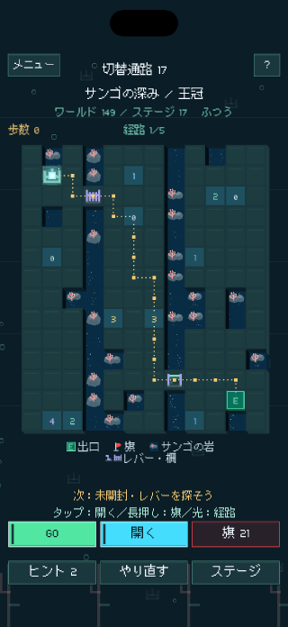
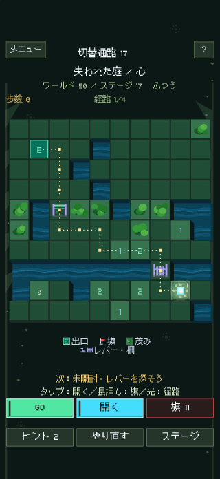
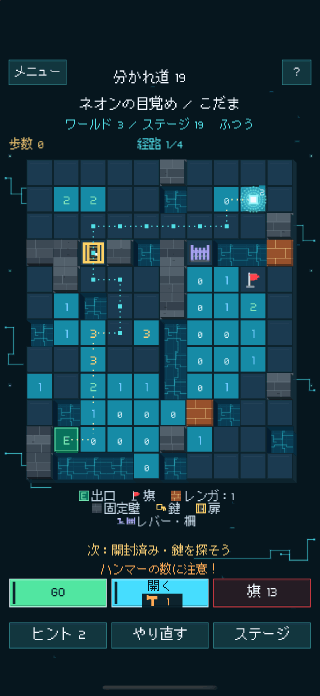
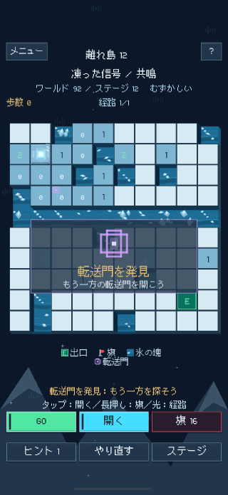
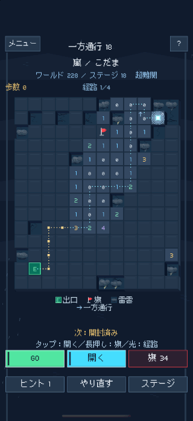
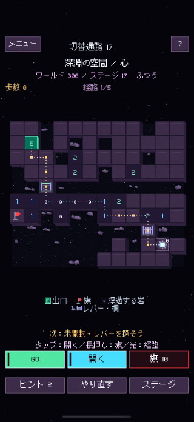

マスを開くたび、道が変わる。
マスを開いて数字を確認し、地雷に旗を立てましょう。GOを押すと光が進みます。出口までの安全な道をすべて開くと、GO ENDで光が出口まで進みます。
LUMEN MINE
数字をヒントに地雷に旗を立て、出口までの安全な道を見つけよう。道を開けば、光がその先へ進みます。
マスを開いて数字を確認し、地雷に旗を立てましょう。GOを押すと光が進みます。出口までの安全な道をすべて開くと、GO ENDで光が出口まで進みます。
限られたハンマーでレンガを壊し、鍵で扉を開け、レバーやポータルを使いましょう。ひとつの扉に鍵を使うと、別の扉が開けられなくなることもあります。
すべてのマスを開かなくても、出口にはたどり着けます。さらに盤面を解いてパーフェクトクリアを目指し、星を集めましょう。
Lumen Mine · YouTube
ゲーム紹介動画でパズルの仕組みや世界観をチェックしましょう。









最初の3ワールドは無料で遊べます。アプリ内で一度購入すると、全300ワールド、合計6,000問をプレイできます。